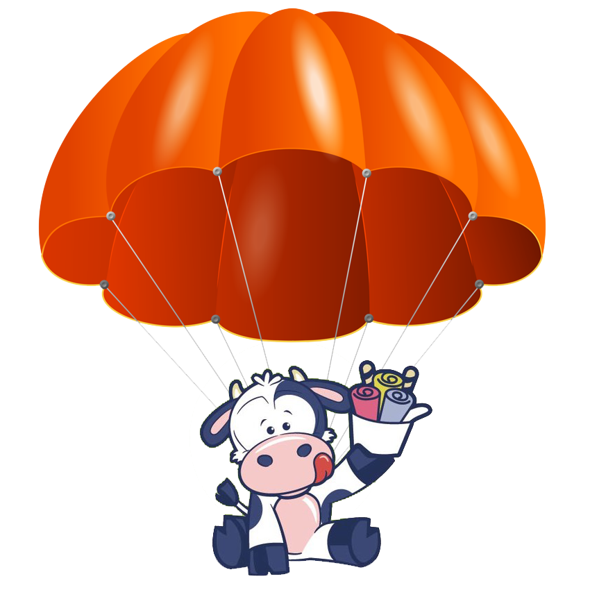

Salto Base El paracaidismo es uno de los deportes aéreos más
impactante; imagínate subido
a una avioneta, volando en mitad del cielo, con un instructor al que irás unido mediante un arnés.
De repente, se abre la puerta y te asomas… la ciudad se ve ahí abajo, muy pequeña… ¿te atreverías a saltar?
Ya no hay vuelta atrás, tu instructor te avisa, y a la de...
3...
2...
1...
¡SALTA!
¡¡¡ Yo lo he hecho y es la mejor experiencia de mi vida !!!
Como dijo María Demuth:
Atrévete a ser valiente hoy y confía en que cuando extiendas tus alas, volarás.
Moo se vuelve paracaidista